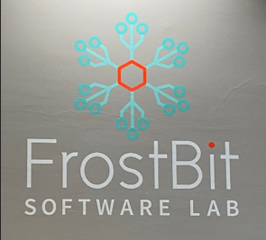

Mijn hoofddoel lag tijdens mijn stage bij de ontwikkeling van de "VR Speech Simulation Game" binnen de Unreal Engine. Mijn persoonlijke doel was om beter te kunnen samen werken met een internationaal team.
Tijdens mijn stage bij FrostBit Software Lab, gevestigd aan de Universiteit voor Toegepaste Wetenschappen in Rovaniemi, Finland, was ik nauw betrokken bij de ontwikkeling van de "VR Speech Simulation Game" binnen de Unreal Game Engine. Dit innovatieve project was specifiek gericht op het creëren van een nieuwe onderwijs- en leermethode voor studenten in het hoger onderwijs, met als voornaamste doel het versterken van de taalvaardigheden van studenten.
In de VR-spraaksimulatie selecteren leerlingen eerst hun moedertaal en vervolgens de taal die ze willen leren, waarna ze kunnen kiezen uit verschillende scenario's, zoals het vragen naar de weg, een vakantiebaantje zoeken en een zieke vriend bezoeken. Gedurende het spel voeren leerlingen gesprekken met virtuele personages en vullen ze ontbrekende dialogen in door opties te selecteren.
Tijdens mijn betrokkenheid bij dit project heb ik meegewerkt aan de ontwikkeling van een uitgebreid scoresysteem dat de leerervaring verrijkt en de motivatie van studenten bevordert. Belangrijke functies die zijn geïmplementeerd omvatten:
Totale Score: Het scoresysteem is ontworpen om studenten na afronding van elk scenario een percentagescore en totale sterrenscore te geven. Deze geeft niet alleen hun prestaties en beheersing van de inhoud weer, maar ook waardevolle feedback om verbetering te stimuleren en groei te bevorderen.
Opslaan, Laden en Resetten: Verbeteringen aan de game-ervaring omvatten opties om de voortgang op te slaan, eerder geladen statussen te herstellen en scenario's te resetten voor een vloeiende spelervaring.
Sterrenbeoordelingssysteem en Totale Sterrenscore: Studenten kunnen tot 3 sterren verdienen voor elk antwoord binnen een scenario, wat hen motiveert om nauwkeurigheid en vooruitgang na te streven.
Scorebord en Leaderboards: Aan het einde van elk scenario worden scores en sterren weergegeven op het scorebord. Dit displayt de prestaties van studenten en het benadrukt ook de gebieden die verbeterd moeten worden. Daarnaast bevordert het leaderbord een gevoel van competitie en betrokkenheid.
Invoer van Spelersnaam: Studenten kunnen hun naam invoeren zodat ze op het scorebord verschijnen en prestaties kunnen delen met klasgenoten, waardoor een stimulerende klasomgeving wordt gecreëerd.
Tutorial: Om de spelervaring te optimaliseren en ervoor te zorgen dat studenten het spel soepel kunnen doorlopen, zal een uitgebreid tutorial worden geïntegreerd in de gameplay. Deze tutorial biedt een gestructureerde en gebruiksvriendelijke rondleiding door de game mechanics en het spel verloop, zodat spelers effectief kunnen vorderen en hun leerproces kunnen optimaliseren.